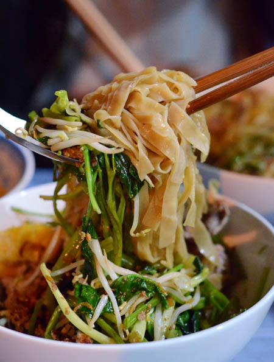

Bánh đa cua trộn

Nguyên Liệu:
- Cua đồng: 600gr
- Cà chua: 2 quả
- Đậu phụ: 2 bìa
- Chả cá: 200gr
- Giò lụa: 300gr
- Bánh đa đỏ: 200gr
- Rau muống: 1 mớ
- Giá đỗ: 200gr
- Hành khô phi vàng: 60gr
- Lạc rang vàng: 60gr
- Chanh: 2 quả
- Sa tế: vừa đủ
- Nước năm, xì dầu: Vừa đủ
- Hạt nêm, muối: Vừa đủ
Cách làm:
Bước 1:
- Cho cua đồng vào xô rửa sạch, ngâm qua nhiều lần nước cho sạch hết bùn đất, rồi tách thân cua cho vào lon. Dùng cối xay giã nhuyễn cho thêm
ít muối và cho cua vào dụng cụ lưới lọc đổ nước vào xoa bóp nhẹ lọc lấy nước, rồi chờ nước cái nổi lên và lọc nước cho vào xoong.
– Mai cua dùng tăm tre khêu lấy gạch, cho vào xoong nước đặt lên bếp, vừa đun vừa dùng đũa hoặc muỗng khuấy nhẹ nhàng khoảng vài
phút để gạch cua không chìm dưới đáy xoong. Rồi đậy nắp xoong lại, cho gạch cua đóng thành tầng rồi dùng muỗng vớt gạch cua ra bát lưu ý không để
gạch cua bị vỡ nát. Như vậy cách làm bánh đa cua trộn ngon, hấp dẫn hơn rất nhiều.
– Chỗ nước dùng còn lại, cho thêm cà chua vào đun chín nêm gia vị cho vừa ăn.
Bước 2:
- Rau muống, giá đỗ nhặt kỹ, rửa sạch với nước. Bắc nồi lên bếp, cho rau muống vào luộc sơ qua, giá đỗ đem trần qua với nước nóng.
Bước 3:
- Cà chua rửa sạch, thái thành múi cau. Đậu phụ thái miếng vuông, bắc chảo lên bếp đổ dầu đun nóng rồi cho đậu vào chiên vàng.
Bước 4:
- Bước tiếp theo của hướng dẫn làm bánh đa của trộn ngon, đổ dầu vào chảo đun nóng, cho chả cá vào chiên vàng đều.
Bước 5:
- Cách làm nước trộn bánh đa: Cho 1 thìa nước lọc hòa tan, rồi cho 2 thìa nước cốt chanh 2 thìa nước năm, 1 thìa đường, 1 thìa hạt nêm và trộn
đều rồi nêm cho vừa ăn.
Bước 6:
- Bánh đa đỏ cho vào chậu nước rửa sạch, ngâm trong nước lạnh 5 phút. Cho bánh đa trần qua xoong dùng, rồi cho ra bát và cho giò lụa, chả cá, đậu
phụ chiên, rau muống và giá đỗ lên trên mặt. Sau đó rắc thêm ít hành phi, lạc rang, nếu ăn cay có thể cho thêm ít sa tế.
Bước 7:
- Sau cùng rưới nước trộn bánh đa lên trên, rồi cho1 ít xì dầu là hoàn thành xong cách làm bánh đa cua trộn cực ngon cho gia đình rồi. Thưởng
thức món ăn khi còn nóng rất tuyệt các bạn nhé.